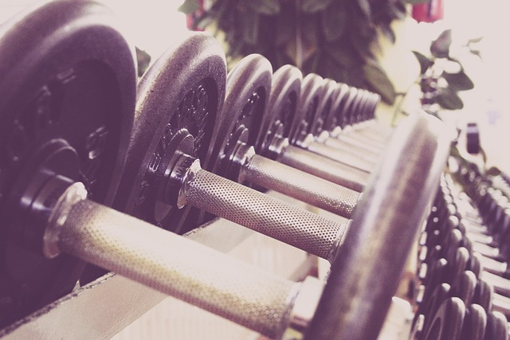

Working Out
Fitness Unleashed: Embracing the Power of Workouts

Welcome to my fitness sanctuary, where we'll explore the incredible world of workouts and the profound impact they can have on our lives. Whether you're a fitness fanatic or just starting your wellness journey, get ready to discover the joy and benefits of staying active.
The Journey to Fitness:
Fitness is more than a trend; it's a lifestyle. Join me as we embark on a transformative journey to achieve better health and well-being through exercise. We'll explore various workout routines, from strength training to cardio, and uncover the secrets to staying motivated and consistent.
Workout Routines:
Discover a world of workout routines tailored to your goals, whether it's building muscle, shedding pounds, or simply staying active. From bodyweight exercises that require no equipment to gym workouts that challenge your limits, we'll cover it all.
Healthy Living:
Physical fitness is just one aspect of a healthy lifestyle. We'll delve into nutrition tips, stress management, and holistic well-being practices to complement your workout journey. After all, a balanced life leads to a healthier you.
Staying Motivated:
We all face challenges in our fitness journey, from busy schedules to occasional setbacks. Learn valuable strategies for staying motivated, setting achievable goals, and overcoming obstacles along the way.
Building a Fitness Community:
Fitness is more enjoyable when shared with like-minded individuals. Explore the benefits of joining a fitness community, whether it's at the gym or online, and how collective motivation can drive your progress.